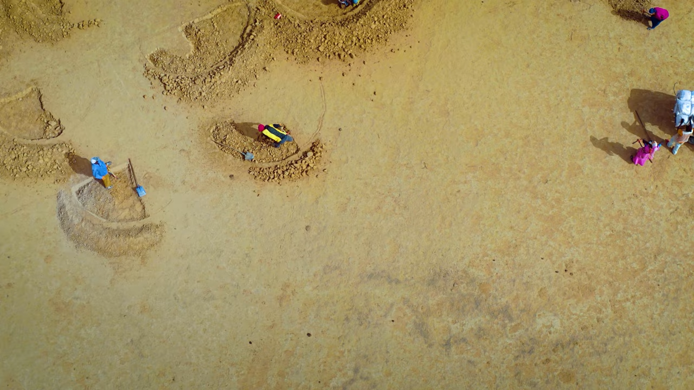
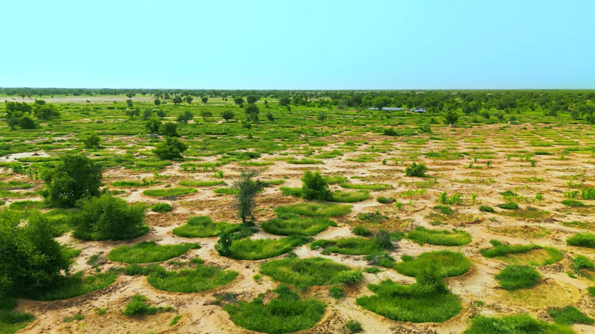
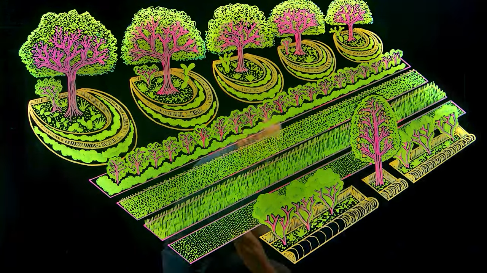

Great Green Wall
Table of Contents
1. Prevent expansion of Sahara Desert
2. Water harvesting structures

Figure 2: Before

Figure 3: After
There was no vegetation for almost 40 years, and the soil had hardened. The locals were skeptical that any change could be made with the project from World Food Programmes.
- 00:06:03 Half moon shaped structure help retain water when it rains
- Each half moon = 4 m diameter
- 00:06:41 Half moon are on contour lines so water flows and remains there
- 00:07:28 Half moon technology is an indegenious technology of the region, that had been forgotten
- Apart from half moon, there are trenches, and other structures.
3. Syntropic Farming

Figure 4: Syntropic Farming
- Process-based, not input-based: Rather than seeking to add nutrients from outside sources, syntropic agriculture mimics and accelerates natural succession processes to capture carbon, water, nutrients (via wildlife) and diversity in degraded and undeveloped land. (Source)
- Syntropic Agriculture, helps the farmer replicate and accelerate the natural processes of ecological succession and stratification, giving each plant the ideal conditions for its development, placing each one in their “just right” position in space (strata) and in time (succession). (Source)
Syntropy is an opposite/complementary force to Entropy.
Entropy has brought the understanding that all concentrated energy in the
universe tends to dissipate, simplify and dissociate, syntropy manifests itself
by forming structures, increasing differentiation and complexity, as with life.
That is, while the entropy disperses, syntropy concentrates.
In the context of the ecosystem, there are not only dissociative but also complexifying processes. The collective metabolism of organisms reorganizes entropic residues into more complex compounds. This would be the mechanism by which life thrives, always generating. Having syntropy as a fundamental matrix for the interpretation and management of cultivated landscapes is what supports the regenerative capacity of syntropic agriculture.